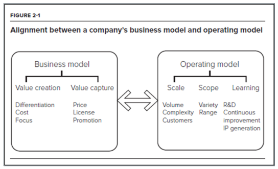
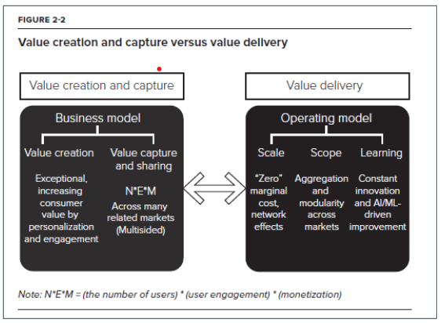

Rethinking the Firm
- This section explores how artificial intelligence is redefining what it means to be a firm in the digital era. It contrasts traditional, asset-based organizations with AI-driven enterprises that scale through data, algorithms, and continuous learning. Becoming an “AI company” is less about technology adoption and more about transforming strategy, culture, and operations to enable algorithmic decision-making and experimentation at scale. Drawing on Iansiti & Lakhani (2020), the section highlights how AI-ready firms build digital infrastructure, data maturity, and agile operating models that support learning loops, eliminate human bottlenecks, and turn intelligence into a core strategic asset.
Reference:
Chapter 2 from Iansiti and Lakhani (2020) focuses on how AI reshapes the boundaries, structure, and strategy of firms.
What Does It Means to Become an AI Company?
Becoming an AI company is not just about adopting new tools—it’s about transforming how your organization thinks, decides, and operates.
AI-driven firms require deep organizational transformation: mission, data architecture, governance, product-centric agility.
Success depends not just on adopting AI tools, but on embedding AI into the firm’s strategy and operating model.
Companies that treat AI as a bolt-on tool (just automation or one-off projects) miss the real value.
Companies that use AI as a strategic driver reshape their boundaries, competitive dynamics, and industry positioning.
Becoming an AI Company
AI isn’t just a feature; it reshapes how decisions are made, and work is executed. It requires moving beyond basic automation to a new AI-driven operating model.
Firms must shift from human-centric to algorithm-centric workflows. This shift demands reimagining roles, processes, and accountability.
AI success is powered by data-driven thinking, agility, and a culture of continuous experimentation. Organizations must encourage learning over certainty, and evidence over intuition.
Becoming an AI company involves organizational change: new teams, roles, and cross-functional collaboration. Leadership must foster trust in algorithmic decision-making and promote transparency.
AI Readiness
AI readiness refers to an organization’s ability to successfully adopt, implement, and scale artificial intelligence technologies to enhance operations, decision-making, and value creation.
Digital Infrastructure: Having the cloud platforms, computing power, and integration tools to support AI systems.
Data Maturity: Accessible, high-quality, well-organized data pipelines that AI systems can learn from.
Talent & Culture: Teams with AI/ML skills and a culture that supports experimentation, agility, and data-driven decision-making.
Leadership Commitment: Executives who understand AI’s strategic importance and invest accordingly.
Experimentation & Learning: A mindset and capability to test, measure, and refine AI applications over time.
A high level of AI readiness means a firm is not just equipped with technology—but aligned across strategy, talent, and process to gain real value from AI.
AI Readiness and the 350 Firm Study
The 350 Firm Study is a large-scale analysis of over 350 organizations that measured their AI maturity—based on digital infrastructure, data integration, analytics use, and AI deployment—and demonstrated a strong positive correlation between higher AI maturity and superior financial performance.
Included firms from sectors like manufacturing, consumer goods, financial services, and retail.
Used an AI maturity index built from about 40 business processes.
Tracked progression from siloed data to integrated AI factories.
Showed that leaders in AI maturity significantly outperformed laggards in metrics like gross margin, net income, and earnings before taxes (e.g., top firms had 55% gross margin vs. 37% for laggards).
AI Readiness Index (350 Firms Study) Key Factors for AI Maturity
Digital infrastructure refers to the scalable, cloud-based systems and modern IT architecture needed to support real-time data processing and AI deployment across the enterprise.
Data accessibility and quality involves integrating siloed data into centralized platforms with strong governance to ensure the data is usable, secure, and valuable for AI-driven decision-making.
Talent and leadership alignment means recruiting and empowering cross-functional teams—including technical, strategic, and governance leaders—to drive transformation with clarity, conviction, and collaboration.
Experimentation capability refers to the organization’s ability to test and iterate AI applications quickly through agile methods, empowered by modular architectures and a culture that embraces continuous learning and adaptation.
Operating Models in the Age of AI
- Strategy, without a consistent operating model, is where the rubber meets the air. —Somewhat famous Italian proverb
Traditional firms are built around physical assets & labor.
AI-driven firms are built around data, algorithms, and digital platforms.
This shift transforms how firms scale, diversify, and learn.
Traditional Vs AI Driven Operating Model
Traditional Operating Model
Optimized for efficiency in production & coordination.
Key features:
Physical supply chains
Human decision-making
Growth requires proportional increases in people/assets
AI-Driven Operating Model
Core = AI Factory: data → algorithms → learning → action.
Operations embedded into digital platforms.
Growth comes from:
User interactions generating data
Automated decisions at scale
Algorithms continuously improving
Scale and Scope Economies
Scale Economies: Cost advantages that companies gain as they increase production, often enhanced by AI automation.
Scale Without Mass
Traditional: scaling = more factories, workers, capital.
AI-driven: scaling = more data & users with minimal costs.
Example: Ant Financial → handles millions of loans without adding staff.
Scope Economies: Efficiencies formed by variety (offering multiple products or services), where AI can help leverage shared data and infrastructure.
Scope Without Complexity
Traditional: diversification adds costly coordination layers.
AI-driven: reuse same data + algorithms + infrastructure across domains.
- Example: Amazon uses AI for retail, AWS, logistics, streaming.
Business Model and Operating Model

Adapted from Figure 2-1, “The AI factory,” in Iansiti & Lakhani (2020, p. 38)
Continuous Learning Model
The learning function of an operating model is essential to driving continuous improvement, increasing operating performance over time, and developing new products and services.
Run frequent A/B tests on products, pricing, or interfaces.
Use controlled trials to evaluate new algorithms, workflows, or customer journeys.
Build feedback loops that connect experimentation results directly back into product design and decision-making.
Each interaction → data → algorithm refinement.
Creates positive feedback loops:
- More users → more data → better service → more users.
Continuous experimentation enables firms to learn quickly, adapt strategies, and improve performance in an AI-driven world. Shifts decision-making from intuition-driven to evidence-based.
Strategic Implications
Continuous experimentation enables firms to learn quickly, adapt strategies, and improve performance in an AI-driven world. Shifts decision-making from intuition-driven to evidence-based.
Agility as a Competitive Advantage
- Firms can pivot quickly as markets, customer preferences, and technologies change.
Data-Informed Strategy
- Strategic choices are validated with real-world results, not assumptions.
Scalable Learning Loops
- Experimentation feeds back into product design, operations, and business models.
Reduced Risk of Large Failures
- Small, fast experiments minimize costly mistakes while accelerating innovation.
Cultural Shift
- Leaders and teams adopt a mindset where “failing fast” is acceptable if it creates learning.
Removing the Human Bottleneck
Human decision-making is often too slow, limited in scale, and inconsistent for the speed and complexity of digital environments
AI removes bottlenecks caused by human limits to facilitate speed, scale, and consistency.
Examples:
Algorithmic trading in finance.
Recommendation engines in retail.
Fraud detection
Dynamic pricing
Implication: Organizations that automate core processes can achieve greater efficiency, adaptability, and competitive advantage in AI-driven markets.
The Irresistible Digital Bicycle
- We see ourselves more akin to an Apple, a Tesla, or a Nest or a GoPro—where it’s a consumer product that has a foundation of sexy hardware technology and sexy software technology. —John Foley, founder and CEO, Peloton
Analogy: Just as the bicycle amplified human physical power, AI amplifies human cognitive power.
Amplification Effect: AI enables people to process vast amounts of data, make faster decisions, and extend their problem-solving capacity beyond natural limits.
Accessibility: Like bicycles, AI tools are becoming widely available and affordable, not just for large firms but also startups and individuals.
Transformative Impact: AI doesn’t just make existing tasks more efficient—it creates new possibilities for innovation, strategy, and value creation.
Tacit vs. Strategic Use of AI
- Tactically means using AI for specific, short-term goals—often focused on operational improvements. It’s about applying AI as a tool to solve clearly defined problems like automating customer service, improving demand forecasting, or streamlining data entry. Tactical use tends to be incremental, often siloed within departments, and relatively easy to implement without changing the organization’s core strategy.
Strategically, on the other hand, means adopting AI in a way that reshapes the organization’s long-term direction, business model, or competitive advantage. Strategic adoption involves aligning AI with the company’s mission, investing in infrastructure and talent, rethinking how value is created and delivered, and often reimagining entire workflows or offerings. It’s about integrating AI into the organization’s DNA.
Tactical AI is about doing things better, while strategic AI is about doing better things.
Tacit vs. Strategic Use of AI
Tacit Use of AI (Incremental, Operational)
AI applied to narrow tasks like automation, simple analytics, local optimizations.
Example: Using AI to speed up loan approvals at a bank, or to forecast inventory in retail.
Value is immediate but limited; it doesn’t fundamentally change the business model.
AI as a “tool”, not a transformation.
Strategic Use of AI (Transformational, Systemic)
AI becomes the core operating model, shaping how the company creates and captures value.
Example: Microsoft embedding AI into every product and workflow, Fidelity reorganizing around data + agile product teams.
Value is compounding, as AI drives new platforms, ecosystems, and industry leadership.
AI as the foundation of a new enterprise architecture.
Tacit vs. Strategic Use of AI
Tacit Use of AI (Incremental, Operational)
AI applied to narrow tasks like automation, simple analytics, local optimizations.
Example: Using AI to speed up loan approvals at a bank, or to forecast inventory in retail.
Value is immediate but limited; it doesn’t fundamentally change the business model.
AI as a “tool”, not a transformation.
Strategic Use of AI (Transformational, Systemic)
AI becomes the core operating model, shaping how the company creates and captures value.
Example: Microsoft embedding AI into every product and workflow, Fidelity reorganizing around data + agile product teams.
Value is compounding, as AI drives new platforms, ecosystems, and industry leadership.
AI as the foundation of a new enterprise architecture.
Discussion Questions
- Can every company become an AI company, or are some better suited than others?
- What organizational or cultural barriers might prevent a company from trusting algorithmic decisions?
Value Creation Capture vs Value Delivery

Adapted from Figure 2-2, “Value creation and capture versus value delivery,” in Iansiti & Lakhani (2020, p. 39)
What Makes A High Performer?
Firms excelling in the areas above saw stronger growth and profitability.
Adaptability and learning were central advantages.
Which factor (infrastructure, data, talent, experimentation) do you think is hardest to build? Why?
What metrics or indicators might you track to assess a company’s AI readiness?
Implementation Scenarios for AI in the Enterprise
Automation: Streamlining repetitive tasks and decisions.
Personalization: Tailoring customer experiences at scale.
Forecasting & Optimization: Enhancing planning with predictive analytics.
Recommendation Systems: Driving engagement and sales through AI-curated suggestions.
Which AI use case (automation, personalization, forecasting, recommendation) would bring the most value in a retail company? What about healthcare?
How might implementing AI in one area (e.g., personalization) impact customer trust or privacy concerns?
The World’s Toughest AI Business
Healthcare is described as the most challenging arena for AI adoption.
Complexity of Data: Medical data is highly fragmented (across hospitals, insurers, labs), sensitive (privacy laws like HIPAA), and often unstructured (clinical notes, images).
High Stakes: Mistakes carry life-or-death consequences, unlike other industries where errors may just affect profits.
Regulatory Environment: Strict oversight makes experimentation, scaling, and deployment much slower than in other industries.
Trust & Adoption: Doctors, patients, and regulators must trust AI recommendations before adoption; building this trust takes time.
Strategic Insight: Success in healthcare AI requires deep integration of data, multidisciplinary expertise, and careful governance.